도면부터 BIM까지,
하나의 모델로.
DWG·SKP·3DM·IFC 파일을 오가던 작업을 한 화면에서 이어 갑니다. 모든 기능을 무료로 씁니다.
불편한 점은 앱에서 ⌘⇧F(윈도우 Ctrl+Shift+F)로 알려 주세요.
하이퍼세븐 캐드로 지은 건물
같은 모델에서 3D·도면·일람표·IFC가 나옵니다. 파일을 받아 직접 열어 보세요.


AI와 말이 통하는
새로운 캐드
그리고, 짓고, 말로 고칩니다. AI가 제안하면 사람이 고릅니다. 하이퍼 AI는 로그인한 뒤 내 Anthropic API 키를 연결해 쓰고, API 사용료는 Anthropic에 직접 냅니다.
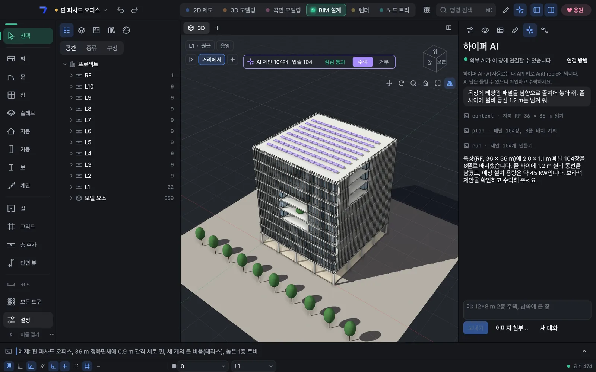
1 2 3 4 5익숙한 그대로
- 12D 제도부터 BIM까지
도면·3D·곡면·BIM을 익숙한 작업 방식으로 오갑니다.
- 2쓰던 명령 이름
벽·문·창, 익숙한 명령 이름과 단축키를 그대로 씁니다.
AI와 함께
- 3말로 지시
“옥상에 태양광 패널을 남향으로 놓아 줘.”
- 4보라색 제안
모델을 바꾸기 전에 제안으로 먼저 보여 줍니다.
- 5수락은 사람이
점검을 통과한 제안만 [수락]으로 확정합니다.
설계 자동화 카드
AI에게 맡길 업무를 카드로 엮은 틀입니다. 대지·법규 조건·점검·BIM으로·도면 세트 카드는 바로 계산하고, 법규 조건은 조례·법정 상한을 출처와 함께 보입니다. 매스 대안과 과업 읽기는 하이퍼 AI나 MCP로 연결한 내 AI가 맡습니다. 직접 그린 매스도 점검과 BIM이 이어 씁니다. 대지 주소와 과업 자료(설계지침서·과업내용서)를 넣으면 ‘과업 읽기’ 카드가 요구 사항을 쪽·조항과 함께 정리합니다.
AI와 함께 설계
글·말·빨간 펜으로 지시하면 결과가 보라색 제안으로 남고, 사람이 수락합니다. 키를 연결하기 전에는 AI 창에 하는 일 한 줄과 연결 방법이 보입니다.
AI 렌더
지금 뷰의 형태 그대로 사진 같은 그림을 만듭니다. ComfyUI(이 컴퓨터), Stability AI·OpenAI(내 키), 사용자 정의 API 중에서 고릅니다.
노드 트리
AI가 짠 노드 트리가 바로 열리고, 사람이 이어서 고칩니다. 반복되는 형태는 노드로 남겨 다시 씁니다.
다섯 가지 작업, 하나의 모델
여러 프로그램을 오가던 작업을 한 화면에서. 익숙한 명령 이름과 단축키로 일합니다.
명령줄과 별칭, 스냅, 치수·해치·블록으로 도면을 긋습니다.
비슷한 도구 · AutoCAD
면을 밀고 당겨 매스를 세우고, 되풀이되는 것은 컴포넌트로 묶습니다.
비슷한 도구 · SketchUp
NURBS 곡선과 곡면을 제어점으로 다듬고, SubD 와 메시를 다룹니다.
비슷한 도구 · Rhino
노드를 이어 형태의 규칙을 짜고, 값을 바꿔 가며 대안을 봅니다.
비슷한 도구 · Grasshopper
벽·문·창·슬래브·지붕·계단으로 짓고, 평면·단면·입면과 일람표를 모델에서 냅니다.
비슷한 도구 · Revit · Archicad
도면은 모델에서 나옵니다
예제 열여섯 벌로 본 3D와 도면 시트. 모두 이 도구로 만든 모델이고, 시작 화면의 ‘예제 둘러보기’에서 열 수 있습니다.
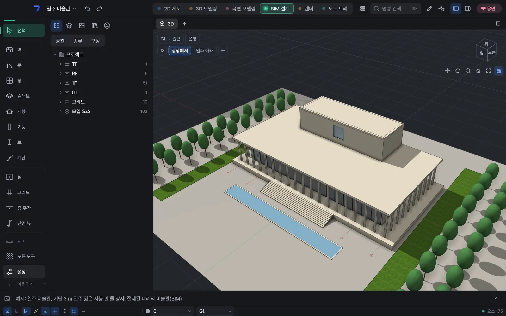
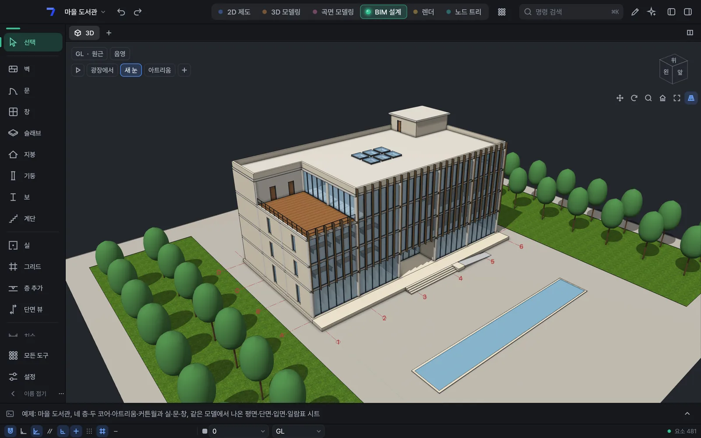
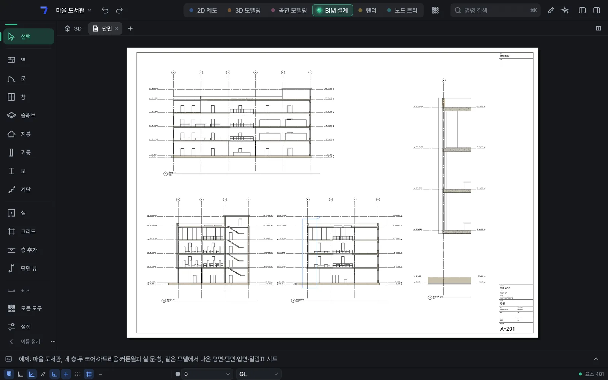
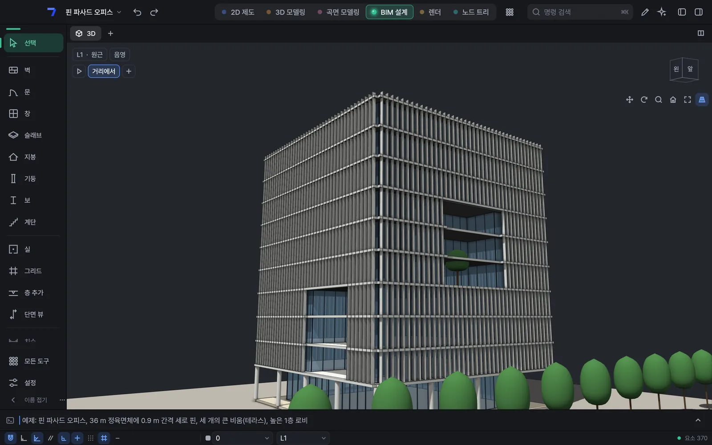
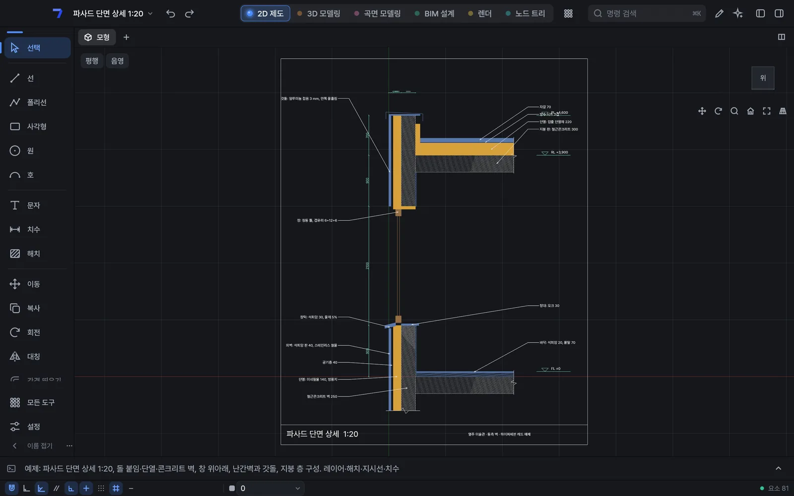
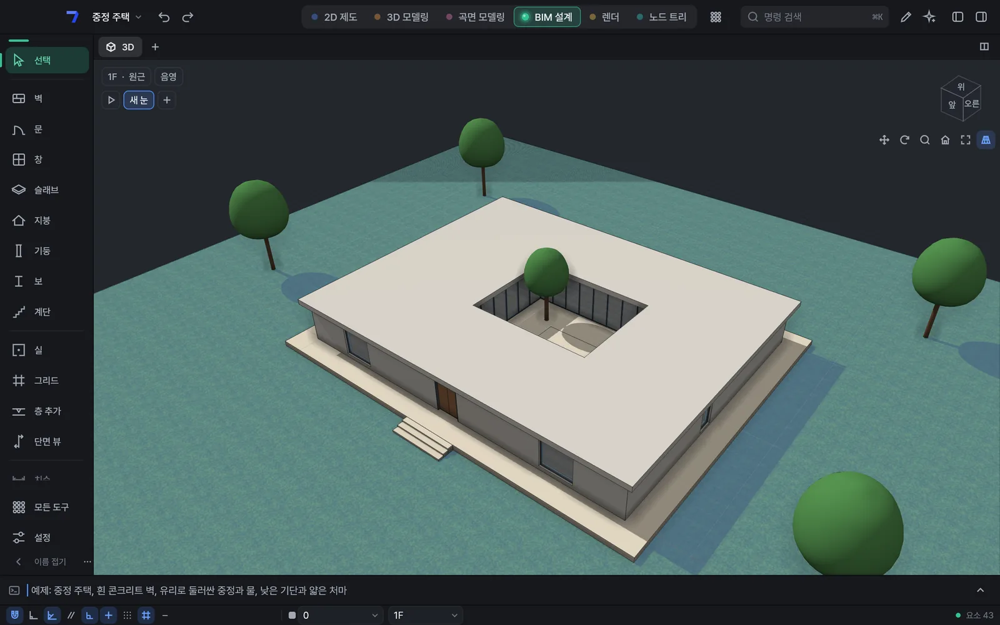
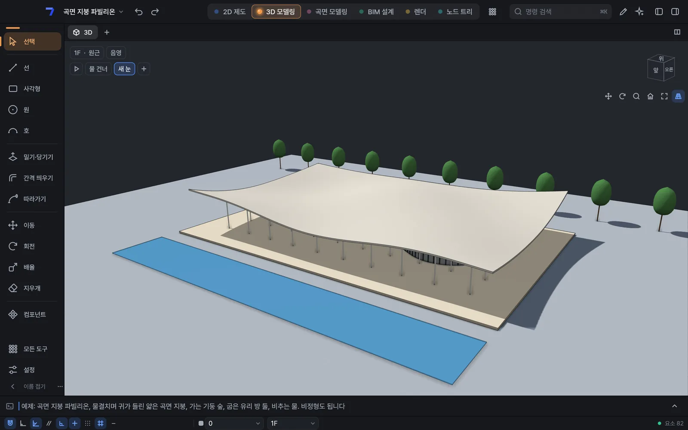
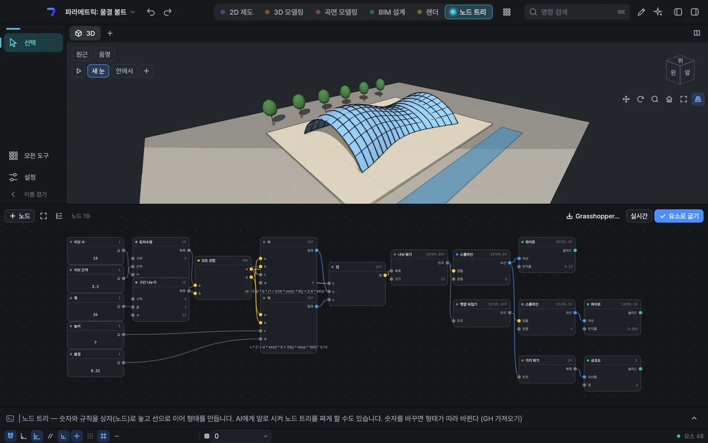
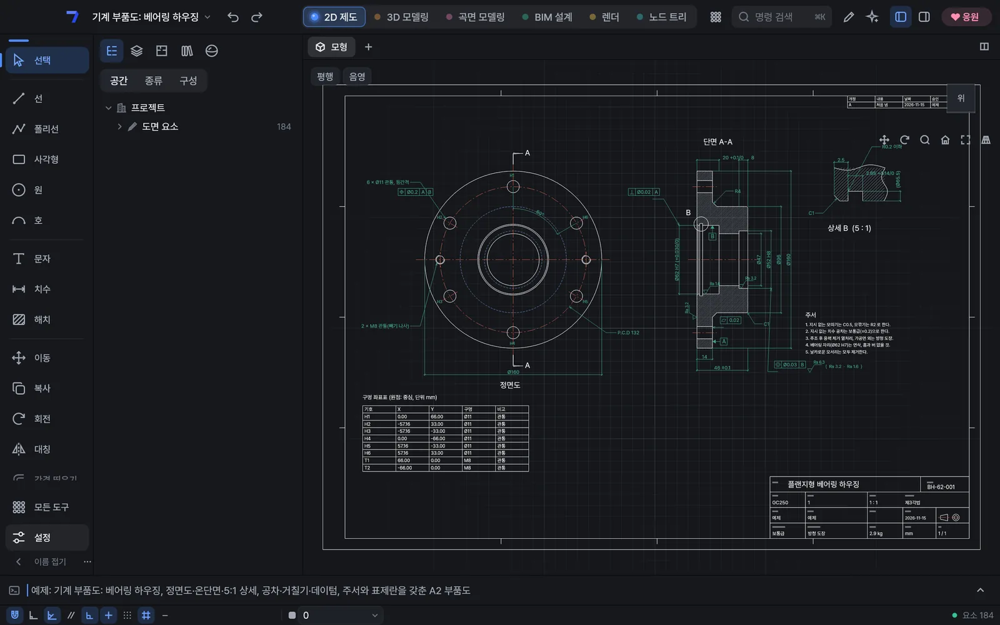
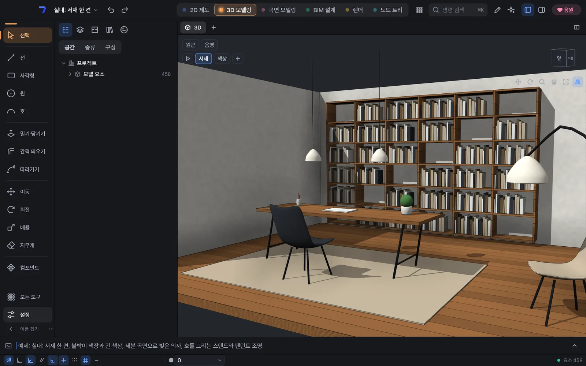
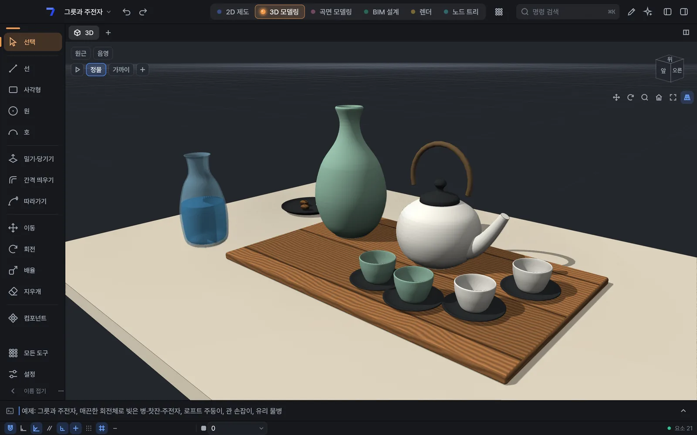
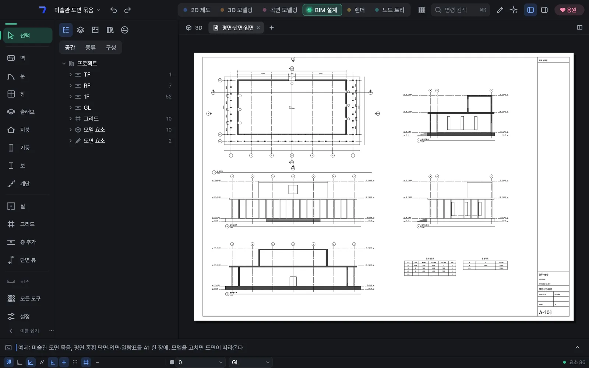
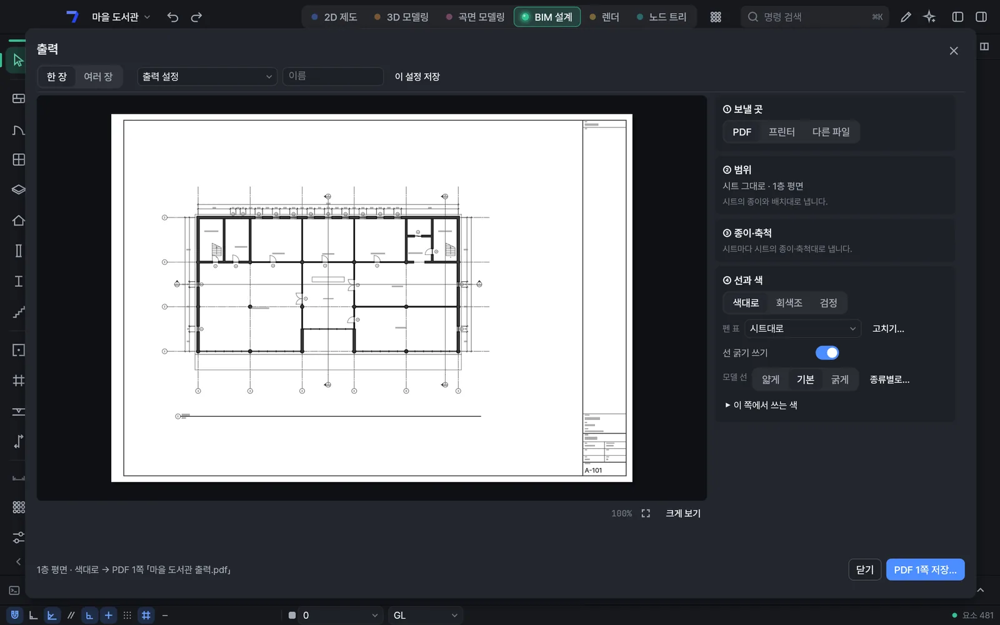
1.3에서 새로워진 것
치수 단위
치수는 건축에서 쓰는 대로 mm·소수 없음이 기본입니다. 치수를 고르면 검사기의 치수 단위에서 소수 한두 자리, 피트·인치, 인치로 바꾸고 문서의 치수가 한꺼번에 바뀝니다. DWG로 내보내면 치수 스타일이 함께 나가 AutoCAD에서 고쳐도 같은 글자이고, 단위가 없는 STL·OBJ·PLY는 열 때 단위를 고릅니다.
다른 프로그램 파일 열기
SketchUp의 글자 파일과 재료만 든 파일을 읽고, 끝까지 읽지 못한 파일은 그렇다고 알립니다. 찾지 못한 USD 참조는 파일 이름으로, DWG 외부 참조는 이름만 카드에 보입니다. 평면 탭을 1:50처럼 바꿔도 손 치수가 화면에서 출력과 같은 크기이고, 좁은 창에서는 위 띠 이름이 짧아져 겹치지 않습니다.
회전축과 방향키
3D에서 회전할 때 아래 입력줄의 X축·Y축·Z축 칩으로 회전축을 고릅니다. 선·이동·복사에서는 방향키로 기준 축에 묶습니다(→ X · ← Y · ↑ Z(3D) · ↓ 풀기). 3D에서 줌아웃해도 모델에 붙은 글자가 모델과 같이 커지고 작아집니다.
처음 쓰는 사람의 눈으로
주택과 카페를 도면 출력·IFC까지 직접 만들어 보며 막히던 곳 48가지를 고쳤습니다. 벽 두께를 바꾸면 부피와 벽 일람표가 따라 바뀌고, IFC로 내보내 다시 열어도 창과 문이 남습니다. 노트북 화면에서도 인허가 검토 창과 도구 줄이 잘리지 않습니다.
문제 알리기
도움말 › 문제 알리기(⌘⇧F)에 한 줄 적고 보내면 화면 그림과 함께 개발팀에 닿고 신고 번호가 나옵니다. 그림은 보내기 전에 미리 보고 뺄 수 있고, 도면 파일은 보내지 않습니다. 고치면 다음에 앱을 열 때 알려 드립니다.
더 쉬운 시작
시작 화면이 “무엇을 하시나요?” 하나만 묻습니다. 2D 도면·3D 모델·곡면 모델·건축 설계·처음입니다 중에서 고르면 작업 공간·도구·단축키가 함께 맞춰지고, 새 문서·예제·받은 파일 열기가 맨 위에 놓입니다.
10분 따라 하기
앱 안 ‘10분 따라 하기: 내 집 한 채’가 누를 곳을 짚어 주며 벽·문·창·바닥·지붕·실·단면까지 함께 짓습니다. 시작 화면·도움말·⌘K에서 고를 때만 열립니다.
다음 할 일
아무것도 고르지 않았을 때 검사기 맨 위에 ‘다음 할 일’이 뜹니다. 평면에서는 벽 그리기·문 넣기·창 넣기·단면 만들기·이 뷰를 PDF로·도면 세트 만들기를 한 번에 누릅니다.
이 뷰를 PDF로, 도면 세트
종이와 축척만 고르면 지금 보는 평면·단면·입면·3D를 시트에 놓아 PDF로 냅니다. ‘도면 세트 만들기’는 층마다 평면, 입면 넷, 단면을 같은 축척으로 한 장씩 놓아 PDF 하나로 냅니다.
설계 자동화를 정확하게
대지·법규 조건·점검·BIM으로·도면 세트 카드는 바로 계산합니다. 법규 조건은 인허가 검토 설정(주소·용도지역)의 조례·법정 상한을 출처와 함께 보이고, 매스 대안과 과업 읽기는 하이퍼 AI나 MCP로 연결한 내 AI가 맡습니다.
한글 명령과 노트북 화면
‘타원’·‘이동’ 같은 한글 명령이 Space로도 바로 돕니다. 창 폭이 좁은 노트북에서는 탐색기를 접어 캔버스를 넓힙니다. ⌘K의 모든 명령에 한 줄 설명이 붙고, AI가 명령을 잘못 부르면 맞는 꼴과 예를 함께 돌려줍니다.
어디서 온 도면이든,
그대로 이어서
받은 파일을 열어 작업을 잇고, 상대가 쓰는 형식이나 공개 표준으로 냅니다.
표시가 없는 형식은 열기와 저장을 모두 지원합니다.
- 오토캐드
- DWGDXFR12~2018 판으로 저장
- 스케치업
- SKP
- 라이노
- 3DMSTEP
- 그래스호퍼
- GH가져오기
- 레빗
- RVT가져오기RFA가져오기IFC
- 아키캐드
- IFCIFC로 주고받기
- 공개 표준
- IFCglTFOBJPDFIFC 2x3·4·4.3
학생도, 설계 회사도 같은 캐드
그리기·모델링·BIM·도면·파일, 하이퍼 AI까지 모든 기능이 무료입니다. 라이선스 걱정 없이 배우고, 같은 도구로 실무까지 이어 갑니다. 사무소에 맞춘 기능은 함께 일하기에서 알려 주세요.
쓰던 명령 이름과 단축키로
다른 캐드에서 익힌 명령 이름과 단축키로 찾고 씁니다. 처음 실행할 때 ‘무엇을 하시나요?’ 하나에 답하면 작업 공간·도구·단축키가 그 일에 맞춰지고, 새 문서·예제·받은 파일 열기가 맨 위에 놓입니다. 명령 별칭(acad.pgp)·펜 표(CTB·STB)·서식(DWT)·블록 폴더는 ‘사무소 표준 옮기기’로 한 번에 옮깁니다.
AI와 함께, 결정은 사람이
앱 안에서 AI에게 말로 시키거나 MCP로 에이전트를 연결합니다. 필요한 도구는 파이썬과 플러그인으로 AI와 함께 만들어 씁니다. AI의 결과는 제안으로 두고, 확정은 사람이 합니다.
윈도우·맥용 1.3.8
윈도우와 맥 모두 내려받아 설치합니다. 새 버전이 나오면 앱이 알려 드립니다.
AutoCAD·Revit·DWG·FBX는 Autodesk, SketchUp은 Trimble, Rhino·Grasshopper는 Robert McNeel & Associates, Archicad는 Graphisoft의 상표입니다. 하이퍼세븐 캐드는 이 회사들과 제휴 관계가 없습니다.